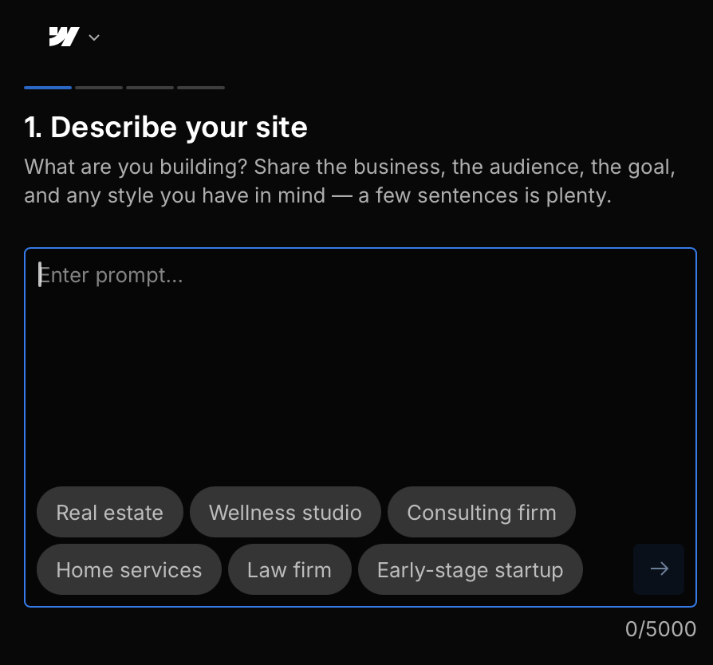

Webflow AI at a Glance
Best for: Businesses, designers, freelancers and professionals who want AI-assisted site creation together with powerful visual design and customization tools.
Free option: Webflow offers a free Starter option for exploring and experimenting. Paid Site plans are required for features such as publishing to a custom domain.
Key attraction: Webflow AI can generate a website from a prompt while creating a structured design foundation that can continue to be customized inside Webflow.

Webflow AI Site Builder — Describe your site interface.
What Is Webflow AI Site Builder?
Webflow AI Site Builder helps users move from a written description to an editable website. Users describe the site they want, and Webflow AI can generate an initial multi-page website structure, content and visual theme.
The generated website is not intended to be the end of the process. Users can continue refining the design, content and structure using Webflow's visual website building environment and AI-assisted tools.
How Webflow AI Website Creation Works
1. Describe Your Website
Start by describing the purpose of the website, the audience and the type of design you want. Webflow AI uses the prompt to create an initial website direction.
2. Generate the Site Structure
Webflow's AI Site Builder can generate a multi-page starting point together with content and a reusable design system rather than only producing a single landing page.
3. Customize the Design
After generation, users can adjust layouts, typography, colors, content and other design elements using Webflow's visual editing environment.
4. Expand and Optimize
Webflow AI can also assist with areas such as generating copy, creating new sections, producing CMS content, generating code components and providing SEO and AEO suggestions.
Key Webflow AI Features
Webflow's AI tools extend beyond the initial website generation process and are designed to support building, managing and improving websites over time.
- AI-powered multi-page website generation
- Reusable design system generated with the site
- Visual website customization
- AI-generated copy and content
- AI-generated website sections
- CMS content generation
- AI-generated code components
- SEO and AEO assistance
- Webflow hosting and custom domain support on eligible plans
Webflow AI Pros and Cons
What We Like
- AI can create a multi-page website starting point
- Strong visual customization after generation
- Generated sites include a structured design foundation
- AI tools extend into content, CMS, code and optimization
- Suitable for projects that may need more design control as they grow
What to Consider
- Webflow has more tools and concepts to learn than some simpler builders
- Custom-domain publishing requires a paid Site plan
- AI usage allowances depend on Workspace plan and available credits
- AI-generated content and designs should still be reviewed before publishing
Webflow AI Pricing
Webflow provides a free Starter Site plan for exploring the platform. Paid Site plans add capabilities such as custom-domain publishing, additional pages and other site features.
Webflow also separates Site plans from Workspace plans, and AI credit allowances can depend on the Workspace tier. Because plans and features can change, check Webflow directly for the latest pricing and included AI allowances before purchasing.
Who Is Webflow AI Best For?
Webflow AI may appeal to businesses, designers, freelancers and professionals who want AI to accelerate the first stage of website creation without giving up substantial control over the final design.
It may be particularly useful for users who expect their website to become more sophisticated over time and want access to Webflow's wider design, CMS, code and optimization ecosystem.
Our Take on Webflow AI
Webflow AI combines fast AI-assisted generation with a website platform designed for deeper customization. The AI Site Builder can provide the starting structure, while Webflow's broader tools allow users to continue developing the website beyond that initial generation.
The trade-off is that the additional flexibility can introduce more concepts to learn compared with very simple website builders. The right choice depends on whether you value simplicity above all else or expect to need more control as your website develops.
Ready to Try Webflow AI?
Explore Webflow's AI Site Builder and check the latest plans, features and AI capabilities directly on Webflow.
Try Webflow AI Site Builder